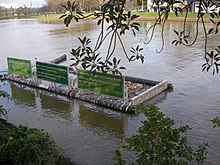
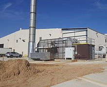

Pollution is the introduction of contaminants into the natural environment that cause adverse change. Pollution can take the form of any substance (solid, liquid, or gas) or energy (such as radioactivity, heat, sound, or light). Pollutants, the components of pollution, can be either foreign substances/energies or naturally occurring contaminants. Although environmental pollution can be caused by natural events, the word pollution generally implies that the contaminants have an anthropogenic source that is, a source created by human activities.
Pollution is often classed as point source or nonpoint source pollution. In 2015, pollution killed nine million people worldwide (one in six deaths). This remained unchanged in 2019, with little real progress against pollution being identifiable. Air pollution accounted for ¾ of these earlier deaths.
Various definitions of pollution exist, which may or may not recognize certain types, such as noise pollution or greenhouse gases. The United States Environmental Protection Administration defines pollution as "Any substances in water, soil, or air that degrade the natural quality of the environment, offend the senses of sight, taste, or smell, or cause a health hazard". The usefulness of the natural resource is usually impaired by the presence of pollutants and contaminants. In contrast, the United Nations considers pollution to be the "presence of substances and heat in environmental media (air, water, land) whose nature, location, or quantity produces undesirable environmental effects.
The major forms of pollution are listed below along with the particular contaminants relevant to each of them:
Pollution has been found to be present widely in the environment. There are a number of effects of this
Global carbon dioxide emissions by country in 2015. Source: Emission Database for Global Atmospheric Research.
The Toxicology and Environmental Health Information Program (TEHIP) at the United States National Library of Medicine (NLM) maintains a comprehensive toxicology and environmental health web site that includes access to resources produced by TEHIP and by other government agencies and organizations. This web site includes links to databases, bibliographies, tutorials, and other scientific and consumer-oriented resources. TEHIP also is responsible for the Toxicology Data Network (TOXNET) an integrated system of toxicology and environmental health databases that are available free of charge on the web.
Pollution control is a term used in environmental management. It means the control of emissions and effluents into air, water or soil. Without pollution control, the waste products from overconsumption, heating, agriculture, mining, manufacturing, transportation and other human activities, whether they accumulate or disperse, will degrade the environment. In the hierarchy of controls, pollution prevention and waste minimization are more desirable than pollution control. In the field of land development, low impact development is a similar technique for the prevention of urban runoff.
Policy, law and monitoring/transparency/life-cycle assessment-attached economics could be developed and enforced to control pollution. A review concluded that there is a lack of attention and action such as work on a globally supported "formal science policy interface", e.g. to "inform intervention, influence research, and guide funding"

A litter trap catches floating waste in the Yarra River, east-central Victoria, Australia The lower stretches of the Yarra are where Victoria's state capital Melbourne was established in 1835, and today metropolitan Greater Melbourne dominates and influences the landscape of its lower reaches. From its source in the Yarra Ranges, it flows 242 kilometres (150 mi) west through the Yarra Valley which opens out into plains as it winds its way through Greater Melbourne before emptying into Hobsons Bay in northernmost Port Phillip Bay..

A thermal oxidizer (also known as thermal oxidiser, or thermal incinerator) is a process unit for air pollution control in many chemical plants that decomposes hazardous gases at a high temperature and releases them into the atmosphere.